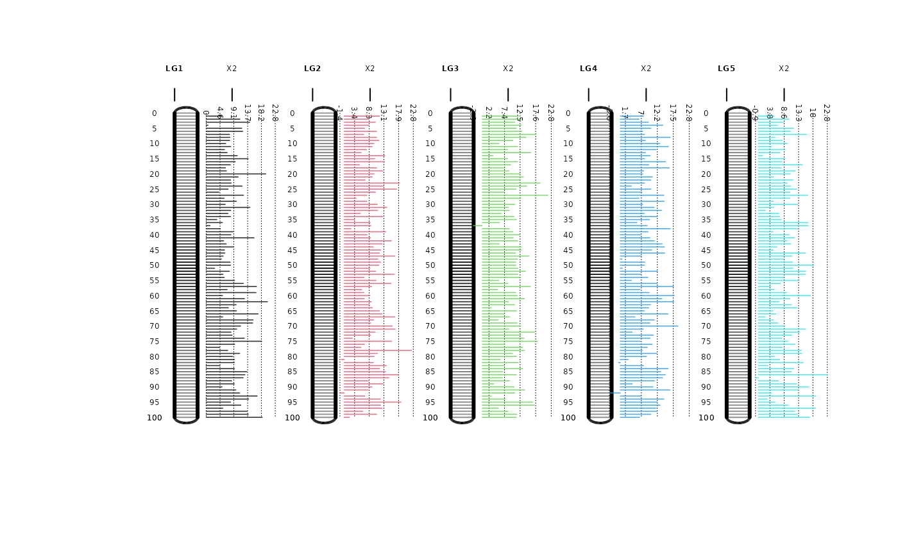
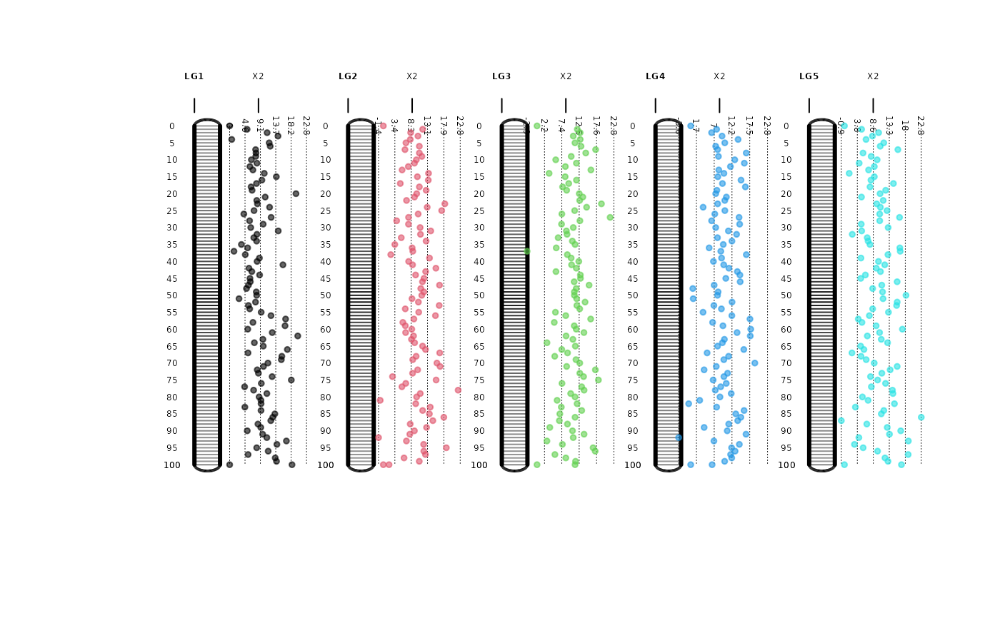
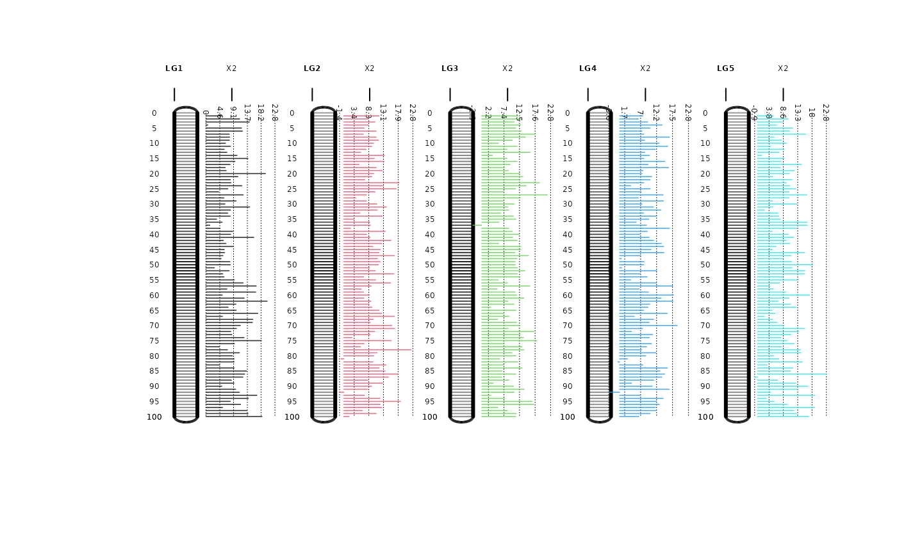
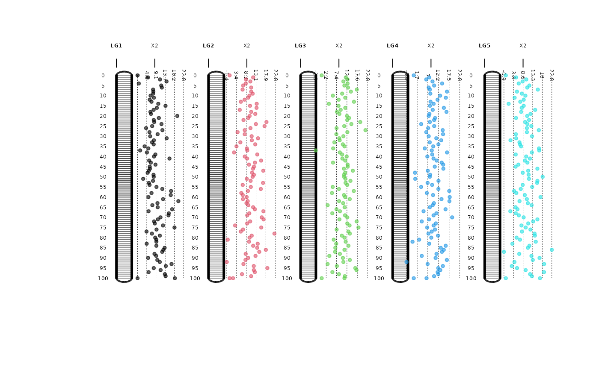

Creating a genetic map plot
map.plot.RdThis function was designed to create a genetic map plot using a data frame indicating the Linkage Group (LG), Position and marker names (Locus).
Usage
map.plot(data, trait = NULL, trait.scale = "same",
col.chr = NULL, col.trait = NULL, type = "hist", cex = 0.4,
lwd = 1, cex.axis = 0.4, cex.trait=0.8, jump = 5)Arguments
- data
the data frame with 3 columns with names; Locus, LG and Position
- trait
if something wants to be plotted next the linkage groups the user must indicate the name of the column containing the values to be ploted, i.e. p-values, LOD scores, X2 segregation distortion values, etc.
- trait.scale
is trait is not NULL, this is a character value indicating if the y axis limits for the trait plotted next to the chromosomes should be the same or different for each linkage group. The default value is "same", which means that the same y axis limit is conserved across linkage groups. For giving an individual y axis limit for each linkage group write "diff".
- col.chr
a vector with color names for the chromosomes. If NULL they will be drawn in gray-black scale.
- col.trait
a vector with color names for the dots, lines or histogram for the trait plotted next to the LG's
- type
a character value indicating if the trait should be plotted as scatterplot `dot`, histogram `hist`, line `line` next to the chromosomes.
- cex
the cex value determining the size of the cM position labels in the LGs
- lwd
the width of the lines in the plot
- cex.axis
the cex value for sizing the labels of LGs and traits plotted (top labels)
- cex.trait
the cex value for sizing the dots or lines of the trait plotted
- jump
a scalar value indicating how often should be drawn a number next to the LG indicating the position. The default is 5 which means every 5 cM a label will be drawn, i.e. 0,5,10,15,... cM.
Value
If all parameters are correctly indicated the program will return:
- $plot.data
a plot with the LGs and the information used to create a plot
References
Covarrubias-Pazaran G (2016) Genome assisted prediction of quantitative traits using the R package sommer. PLoS ONE 11(6): doi:10.1371/journal.pone.0156744
See also
The core functions of the package mmer
Examples
#random population of 200 lines with 1000 markers
M <- matrix(rep(0,200*1000),1000,200)
for (i in 1:200) {
M[,i] <- ifelse(runif(1000)<0.5,-1,1)
}
colnames(M) <- 1:200
set.seed(1234)
geno <- data.frame(Locus=paste("m",1:500, sep="."),LG=sort(rep(c(1:5),100)),
Position=rep(seq(1,100,1),5),
X2=rnorm(500,10,4), check.names=FALSE)
geno$Locus <- as.character(geno$Locus)
## look at the data, 5LGs, 100 markers in each
## X2 value for segregation distortion simulated
head(geno)
#> Locus LG Position X2
#> 1 m.1 1 1 5.1717370
#> 2 m.2 1 2 11.1097170
#> 3 m.3 1 3 14.3377647
#> 4 m.4 1 4 0.6172092
#> 5 m.5 1 5 11.7164988
#> 6 m.6 1 6 12.0242236
tail(geno)
#> Locus LG Position X2
#> 495 m.495 5 95 5.547936
#> 496 m.496 5 96 9.827438
#> 497 m.497 5 97 18.902348
#> 498 m.498 5 98 12.025266
#> 499 m.499 5 99 12.921584
#> 500 m.500 5 100 16.912310
table(geno$LG) # 5 LGs, 100 marks
#>
#> 1 2 3 4 5
#> 100 100 100 100 100
map.plot(geno, trait="X2", type="line")
 map.plot(geno, trait="X2", type="hist")

map.plot(geno, trait="X2", type="dot")

# data("DT_cpdata")
# MP <- MP_cpdata
# colnames(MP)[3] <- c("LG")
# head(MP)
# map.plot(MP, type="line", cex=0.6)
map.plot(geno, trait="X2", type="hist")

map.plot(geno, trait="X2", type="dot")

# data("DT_cpdata")
# MP <- MP_cpdata
# colnames(MP)[3] <- c("LG")
# head(MP)
# map.plot(MP, type="line", cex=0.6)